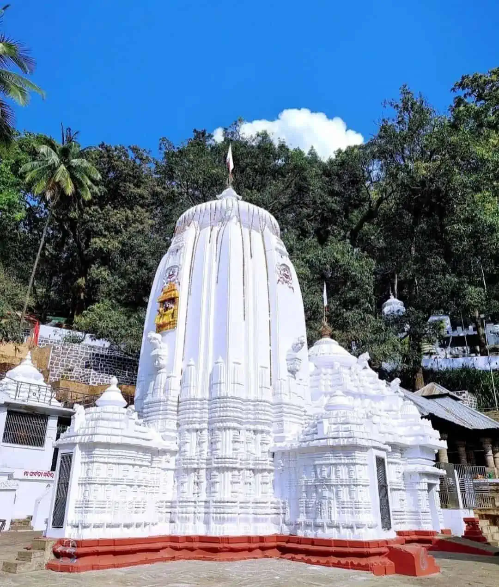

We are offering you an Incredible life exeperience that you will never forget since last 7 years.
Lingaraja Temple is a Hindu temple dedicated to lord Shiva. It is one of the oldest temples in Bhubaneswar,Odisha. The temple is the most prominent landmark of Bhubaneswar city and one of the major tourist attractions. It is the largest temple in Bhubaneswar. The central tower of the temple is 180 ft (55 m) tall. The temple represents the quintessence of the Kalinga architecture and culminating the medieval stages of the architectural tradition at Bhubaneswar.

The Puri Jagannath Temple is a very famaous temple not only in odish but throughout India. It is an important Hindu temple dedicated to lord Jagannath.It is famous for its annual Ratha Yatra, or chariot festival, in which the three principal deities are pulled on huge and elaborately decorated temple cars.People from all around the world come to see this chariot frestival.
Kapilash Temple, also known as Mahadev Chandrashekhar Temple, is situated in the north eastern part of Dhenkanal town, Odisha. The temple is situated at a height of about 2239 feet from sea level. The main tower of the temple is 60 feet tall. There are two ways to reach the temple. One is by climbing 1352 steps and the other (thru Barabanki) is by travelling the twisting way.The temple is about 12 km away from city so you can use our tour and travel services to reach the temple at your convience.

The Ghatgaon Maa Tarini Temple in Ghatgaon is a famous Hindu Goddess temple dedicated to Maa Tarini. Maa Tarini is one of the embodiments of Shakti and is one of the chief presiding Goddesses in Odia culture. Maa Tarini is the presiding deity for all Shakti and Tantra peeths or shrines in Odisha. It is belived that visiting this tempels will end up your problrms and bring peace in your life
Bus
Car
Bike
you can easily travel all the temples with our transportation service and enjoy the beautiful views.
for booking and more details contact us:
Email-temples@gmail.com
mob.no.-123456789